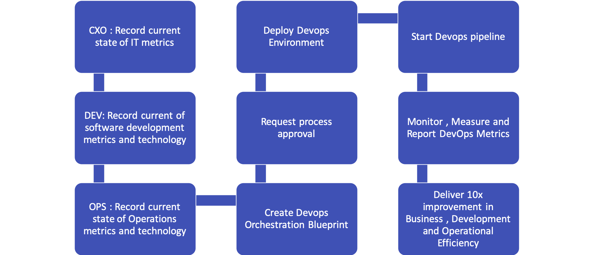

If you are new to DevOps as a Service click on "Start DevOps as a Service".
If you have a running DevOps pipeline already, login to view dashbaord
DevLite's key features
- Wipro’s DevOps as a Service offering DevLite creates a business and pipeline first strategy
- Enables a plug and play platform
- Delivers a metrics driven value proposition for rapid Continuous Integration and Delivery
- DevLite takes the consult , design , deploy , measure and optimize approach involving an assessment of people , process and technology metrics
- This approach is outlined in the adjacent workflow diagram
